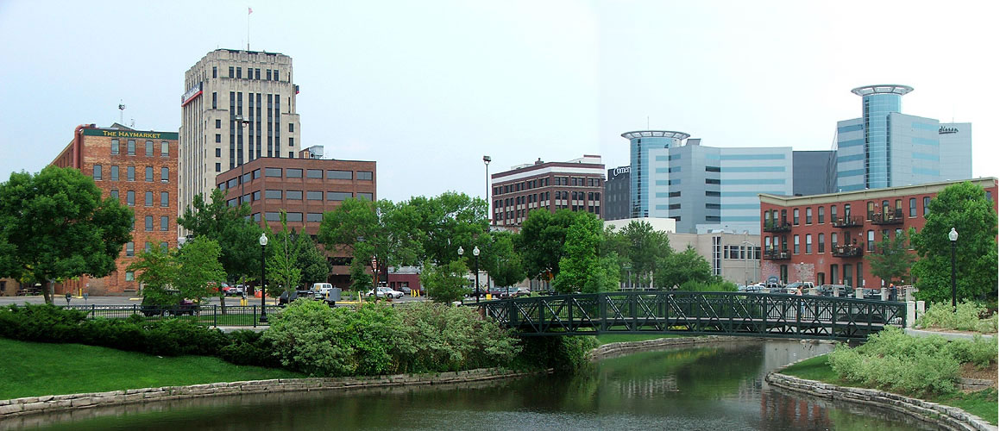

Grand Rapids

Grand Rapids is a fantastic place to live. The population of Grand Rapids is booming because of health care, construction and manufacturing jobs.
In Grand Rapids there are a lot of bars, restaurants, coffee shops, and parks.
The cost of living in Grand Rapids is 12% cheaper than the national average, and housing is affordable with a median home price of $113,600.
Muskegon

Muskegon is another one of the best places to live in Michigan. It has some of the best public schools in the state along with Baker College and Muskegon College. Muskegon is also home to the biggest amusement park in the state, Michigan’s Adventure.
Michigan Adventure has super fun roller coasters and a waterpark. The median home value in Muskegon is $68,800, with an average household income of $30,737. The median gross monthly rent is $697.
Kalamazoo

Kalamazoo isnt just considered one of the best places to live in Michigan but it is considered the one of the best places to live in the whole United States.
The cost of living is affordable and has a great school system.
Lansing

Lansing is one of the best places to live in Michigan. Lansing has a 2.9% unemployment rate and plenty of job opportunities. It is a great place for education and those who are seeking opportunity.
Lansing's cost of living is 17% lower than the national average, and its cost of housing is 47% lower than the national average, with a median home price of $100,115 and a median rent around $850.
The weather in Michigan is fairly moderate throughout the year, but the winter is something you'll need to prepare for if you're coming from somewhere warmer.
Some of the best things to do in Lansing is to get outside and enjoy the weather throughout the city! Visit the Lansing River Trail, a 13-mile stretch along the Grand River and Red Cedar River.
The top attractions to visit in the Lansing area: Potter Park Zoo, Michigan State Capitol, Michigan History Center, Impression 5 Science Center, R.E. Olds Transportation Museum.